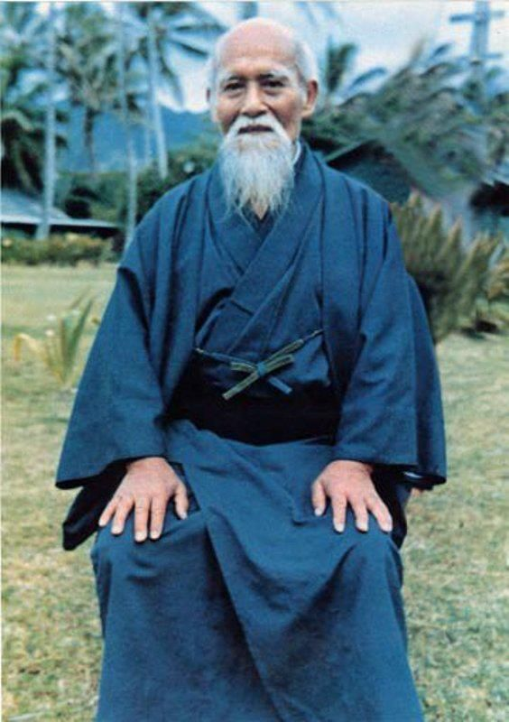

O Criador do Aikido
Morihei Ueshiba, nascido em 14 de dezembro de 1883 em Tanabe, Japão, é o fundador do Aikido, uma arte marcial influente e filosófica do século XX. Conhecido como "O Sensei", Ueshiba dedicou sua vida a uma arte que alia habilidade física à promoção da harmonia e paz interior. Desde jovem, Ueshiba demonstrou talento nas artes marciais, treinando em Jujutsu e Kenjutsu. Sua busca por uma prática mais profunda levou-o a estudar com mestres como Sokaku Takeda, que o ensinou o Daito-ryu Aiki-jujutsu, fundamental no desenvolvimento do Aikido. Buscando integrar técnica com princípios filosóficos e espirituais, Ueshiba criou o Aikido, que significa "Caminho da Harmonia com a Energia".
A técnica é conhecida por seus movimentos fluidos e circulares, que neutralizam ataques de forma suave. Ueshiba fundou o Aikikai, a principal organização para a propagação do Aikido, e espalhou seus ensinamentos globalmente. Seu impacto transcendeu fronteiras, promovendo defesa pessoal, paz e compreensão mútua. Falecido em 26 de abril de 1969, o legado de Ueshiba vive através do Aikido, cuja prática continua a refletir seus princípios de harmonia, respeito e não-violência. O Aikido não é apenas uma técnica de combate, mas uma filosofia que busca a harmonia entre corpo, mente e espírito.